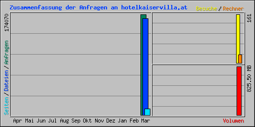

| Zusammenfassung nach Monaten | ||||||||||
|---|---|---|---|---|---|---|---|---|---|---|
| Monat | Tagesdurchschnitt | Monats-Summe | ||||||||
| Anfragen | Dateien | Seiten | Besuche | Rechner | Volumen | Besuche | Seiten | Dateien | Anfragen | |
| Mar 2017 | 12433 | 11887 | 736 | 11 | 27 | 825.50 MB | 161 | 10313 | 166428 | 174070 |
| Summen | 825.50 MB | 161 | 10313 | 166428 | 174070 | |||||
| Generated by Webalizer Xtended (RB30) by Patrick Frei based on Webalizer Version 2.23-08 |